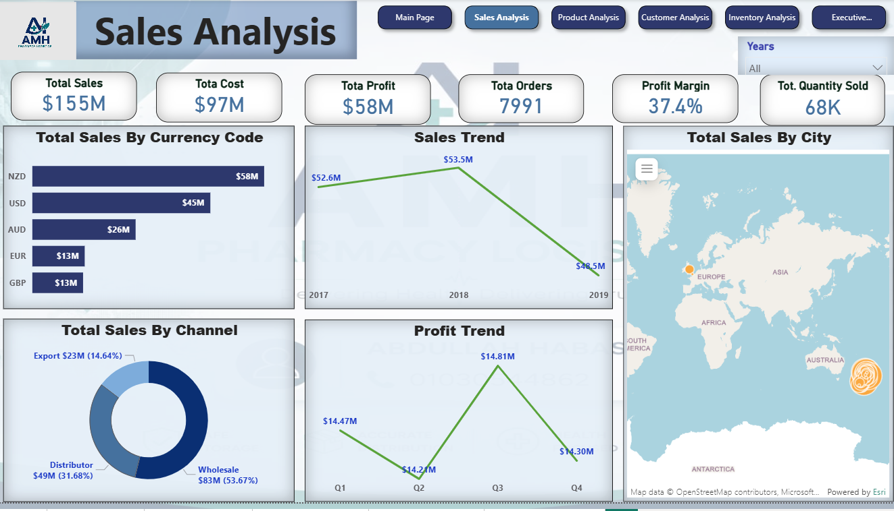
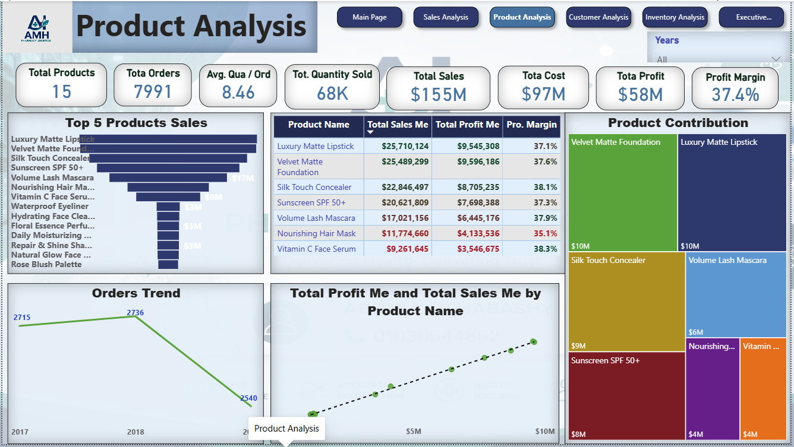
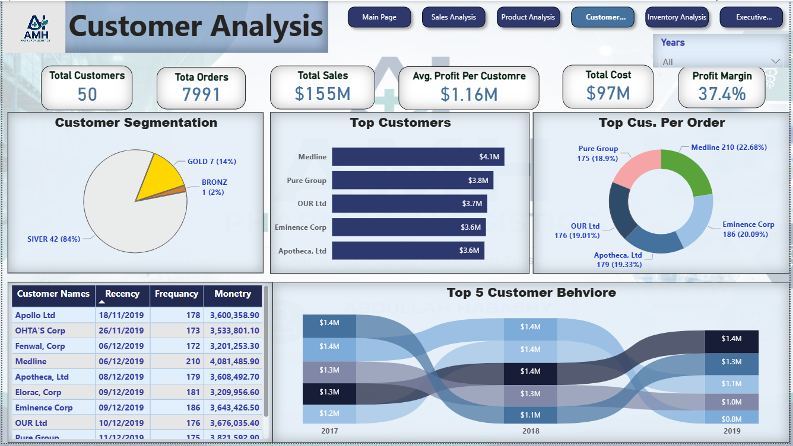
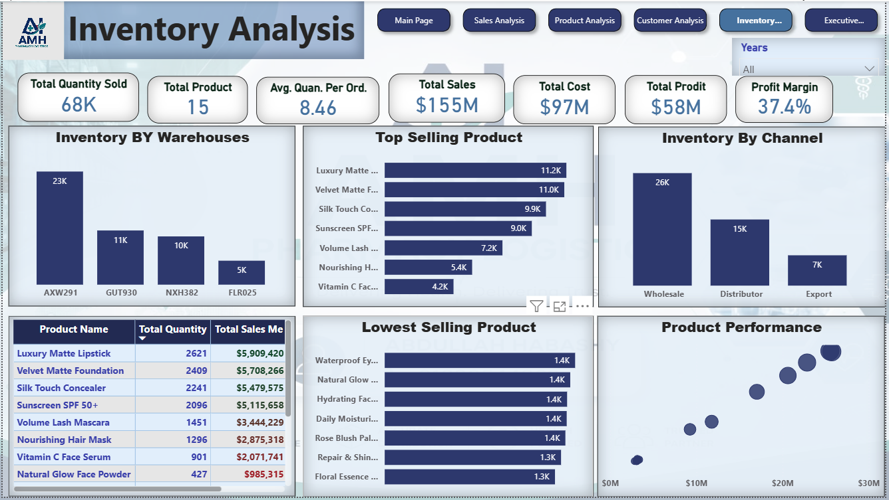

Power BI Case Study
AMH Business Performance Analysis
Project Overview
Developed an end-to-end Power BI analytics solution to evaluate sales performance, product profitability, customer behavior, and inventory distribution across channels, markets, and warehouses.
Performance
Key KPIs
$155M
Total Sales
$97M
Total Cost
$58M
Total Profit
37.4%
Profit Margin
7,991
Total Orders
68K
Units Sold
50
Total Customers
15
Total Products
Dashboard Gallery
Power BI Analysis Pages
Sales Analysis

Tracks total sales, cost, profit, orders, profit margin, sales by currency, sales by channel, sales trend, and profit trend.
Product Analysis

Analyzes top-selling products, product contribution, product profit margin, order trends, and sales-profit relationship by product.
Customer Analysis

Evaluates customer segmentation, top customers, customer order behavior, recency, frequency, monetary value, and customer performance trends.
Inventory Analysis

Reviews inventory distribution by warehouse, top-selling products, lowest-selling products, inventory by channel, and product performance.
Analysis
Key Insights and Recommendations
Key Insights
- Total sales reached $155M with $58M total profit and 37.4% profit margin.
- Wholesale contributed the largest share of sales compared with distributor and export channels.
- Top products generated strong sales and profit contribution.
- High-value customers represented a key driver of business performance.
- Inventory distribution varied across warehouses and sales channels.
- Profit declined in 2019, which requires further performance investigation.
Recommendations
- Protect high-value customers through targeted retention and account management.
- Prioritize top-performing products in sales, marketing, and inventory planning.
- Investigate the 2019 profit decline and identify cost, pricing, or channel-related causes.
- Optimize inventory allocation based on product demand and channel performance.
- Monitor low-selling products to reduce inventory pressure and improve stock efficiency.